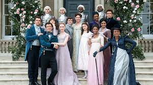

House of the Dragon
"House of the Dragon" ist eine fantastische Serie, die im Game of Thrones-Universum spielt.
Mehr erfahren
One Piece
"One Piece" ist eine beliebte Anime-Serie über die Abenteuer von Monkey D. Ruffy und seiner Crew.
Mehr erfahren

Bridgerton
"Bridgerton" ist eine historische Serie, die Intrigen und Romantik im London des 19. Jahrhunderts zeigt.
Mehr erfahren